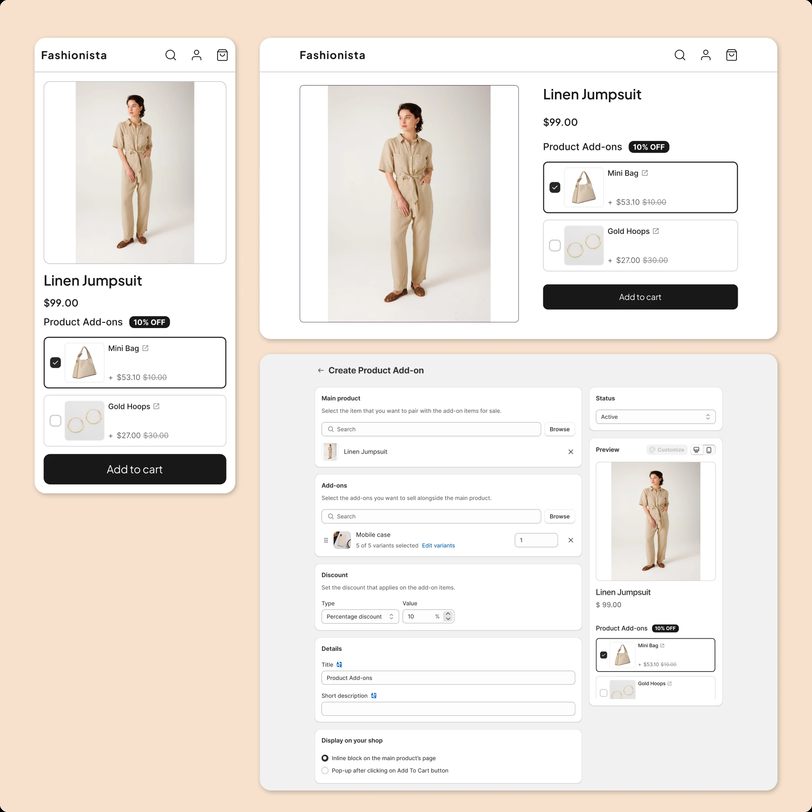
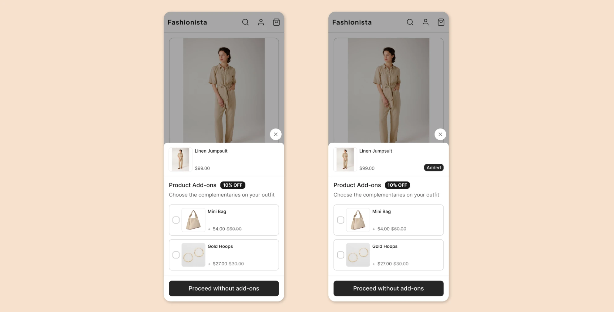
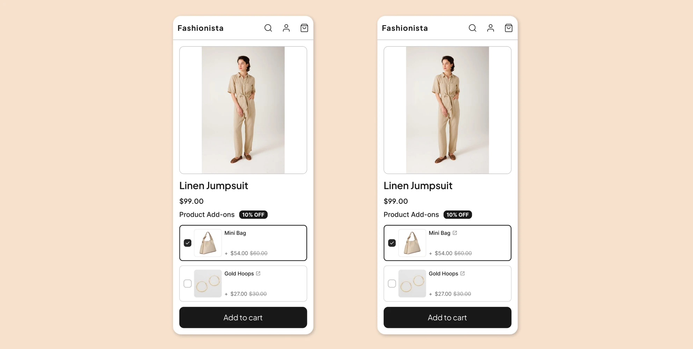
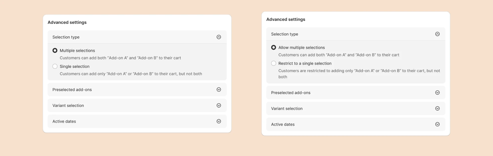
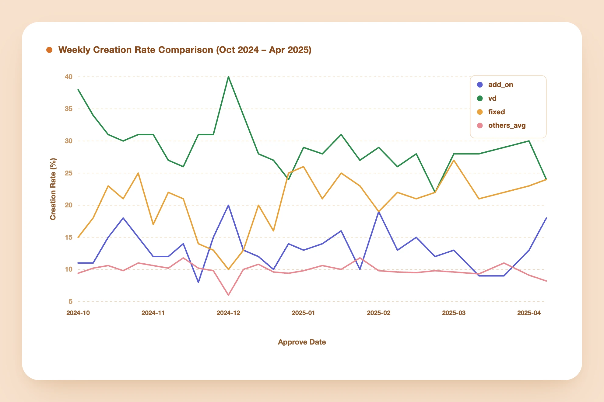
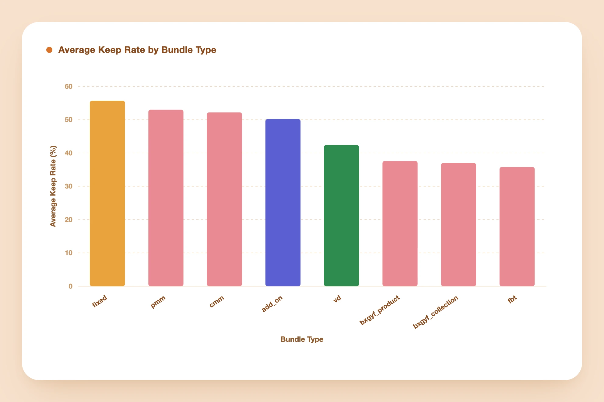
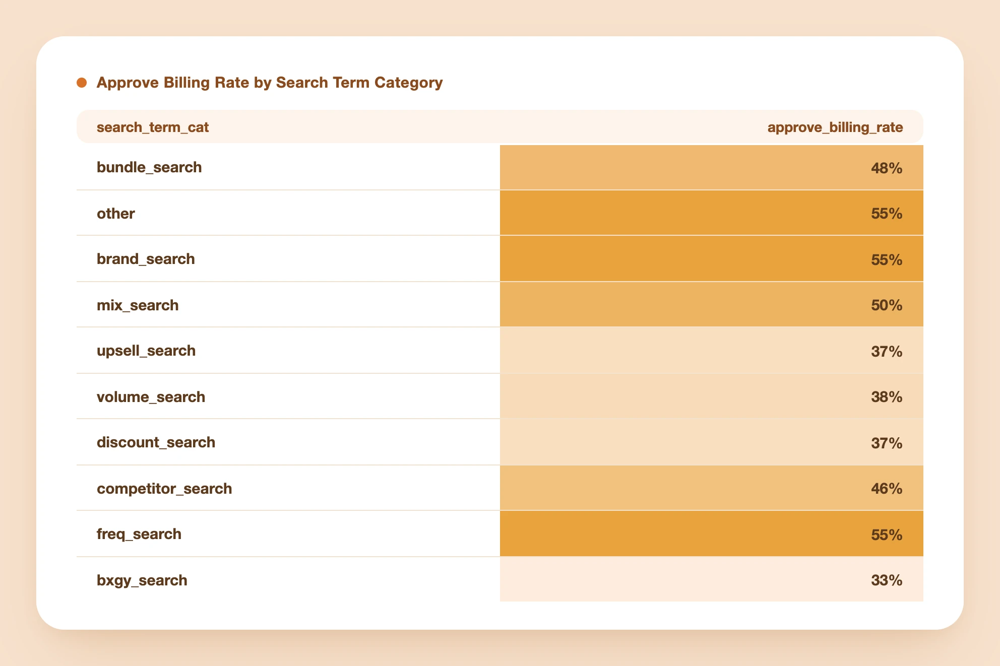
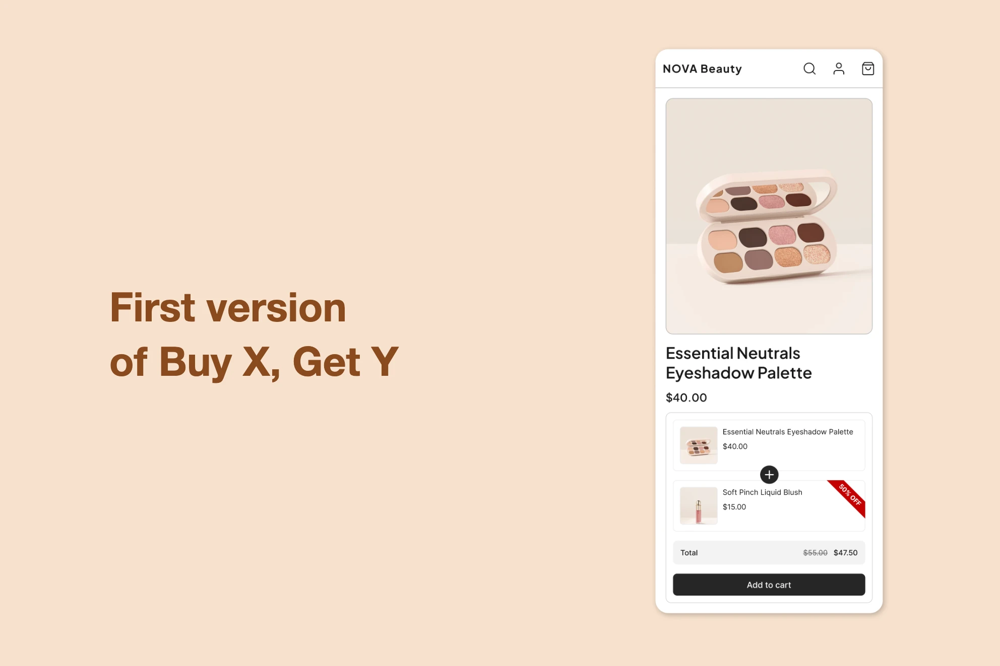
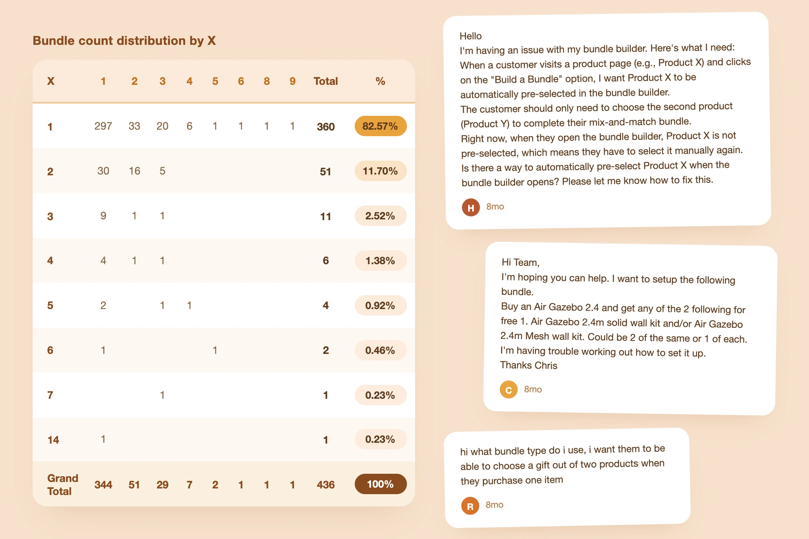
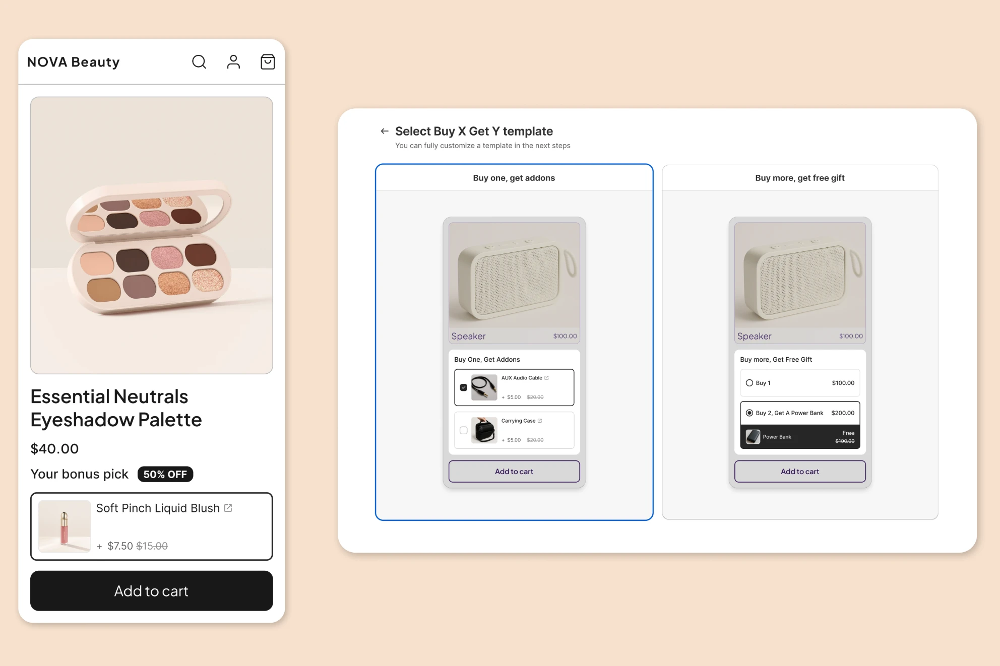

A New Feature, an Old Assumption
A support pattern led me to build a new add-on feature, validated through a waitlist and tested with real merchants before it shipped. It became one of the app's top three most-used offer types within months. Building it also handed me a framework I used again later: while investigating a separate rise in trial cancellations, I traced the problem to an older, heavily used feature built around the wrong assumption. Rebuilding it on the same model cut cancellations 17% for the A/B test's active group versus the inactive control, and nearly in half for the merchants hit hardest.

Two offers, one shared through-line
A Shopify app helps merchants build discount and bundle offers without sacrificing how their storefront looks. Two of its most-used offer types are the product add-on and Buy X Get Y. I designed both, and looking back, the second project only made sense because of what I learned building the first.
Finding the add-on in the noise
Support requests are usually scattered and easy to dismiss individually. Toward the end of Q2 2024, they stopped being easy to dismiss. In a single week I counted more than five separate requests for the same thing: a way to attach a small extra item to a product without folding it into a full discount bundle. One merchant described it plainly, an expensive product paired with a cheap add-on, no discount needed, just the ability to offer them together.
Rather than commit engineering time on the strength of a few tickets, we ran a cheap test first. On June 23 I added a card for "product add-on" to the bundle-type selection screen. Clicking it didn't build anything. It just joined the merchant to a waitlist. By the end of July, over 400 people had signed up. That number, combined with competitors starting to experiment with similar features, was enough to move this from "interesting" to "next."

How I approached it
1. Researching what merchants actually needed
I spent the following weeks on research from three directions. I read through support threads to find the earliest, clearest statements of what merchants actually wanted, which surfaced a consistent pattern: most people already used the word "add-on," expected it to appear once a specific product was in the cart, and disagreed mainly on whether the customer or the merchant should choose the item. Everyone agreed it belonged on the main product's page.
I also audited the leading Shopify apps offering something similar, to see how they structured the setup flow and the storefront experience, and read outside the Shopify ecosystem entirely, into how add-ons function as an upsell tactic in retail generally. A few ideas kept surfacing there:
- An add-on works because it completes a decision the customer has already made, not because it's a hard sell.
- Too many options at once cause hesitation.
- Timing matters: an add-on shown too early competes with the main purchase decision instead of following it.

2. Turning research into a concept
That research gave me a working definition I could design against. Every add-on offer breaks down into four parts: the main product, the add-on items themselves, the discount applied to those items, and the rules governing how a customer gets them. A few principles sat underneath every design decision I made afterward. An add-on should be an easy yes, not a second sales pitch. It should stay small and relevant to the main product. It only appears once the purchase decision is already made, near the end of the shopping journey, the same place it would sit at a physical checkout counter.
3. Scoping the first release
From there I turned the research into thirteen user stories. We sat down with product and engineering to cut that list down to what was realistic for a first release. Several ideas that tested well in research didn't make the cut simply because they added complexity the first version didn't need.
Pure add-on
A small extra item added to the cart alongside the main product, with or without a discount, shown once the purchase decision is made.
Placement timing
Merchants can trigger it at key moments:
- When the product is added to cart
- On the cart page
- Right before checkout
Selection rules
Configurable behavior:
- Pre-selected by default
- Single or multiple items
- Minimum/maximum quantity
- Mandatory items
Bundle-to-add-on conversion
Turning an existing bundle offer into an add-on.
Pure add-on
A small extra item added to the cart alongside the main product, with or without a discount, shown once the purchase decision is made.
Placement timing
Merchants can trigger it at key moments:
- When the product is added to cart
- On the cart page
- Right before checkout
Selection rules
Configurable behavior:
- Pre-selected by default
- Single or multiple items
- Minimum/maximum quantity
- Mandatory items
Bundle-to-add-on conversion
Turning an existing bundle offer into an add-on.
4. Designing across two surfaces
The work split naturally into two surfaces: how the offer appears to a shopper on the storefront, and how a merchant builds one in the admin panel. Once both were far enough along to click through, we didn't want to guess whether they worked, so we went back to the waitlist and recruited four merchants for usability testing. I walked each of them through building an offer myself, then watched their reaction to how it appeared on their storefront.

5. Testing with real merchants
We ran usability tests with four merchants to understand how they thought about add-ons and where the experience needed work. Three problems came up:
- After a customer clicked "add to cart," the popup made it look like the main product hadn't been added and needed to be added again. We fixed that.
- Customers wanted to look closer at the add-on products themselves, so we added a link to each one.
- Some of the wording in the advanced settings wasn't clear about what each option actually did, so we rewrote it.



6. Building it
Three engineers built it from there: one on the storefront, one on the admin panel, one on the backend handling the data model and APIs. It took a couple of weeks.
7. Measuring whether it worked
We evaluated the launch using the GSM framework (goals, signals, metrics). The app offers eight bundle types in total, and the add-on became one of the three most frequently created, standing alongside the two longest-established types. Retention held up just as well. Looking at whether merchants still had an active add-on offer three days after creating it, across a six-month window from October 2024 to April 2025, the rate was on par with, and at times slightly better than, the rest of the catalog.


The bigger payoff wasn't the metric, though. Writing down a clear definition and a small set of principles before designing gave every later decision a shared reference point. That same framework ended up useful somewhere I didn't expect: the app's oldest bundle type.
A signal buried in trial cancellations
In Q2 2025, the team was focused on lowering trial cancellations. I broke new users down by the search term that brought them to the app, on the theory that it was the clearest available signal of intent. One group stood out immediately: merchants who arrived searching for "Buy X Get Y" or "BOGO" were canceling their trials at a noticeably higher rate than everyone else.

Tracing how Buy X Get Y was built
To understand why, I had to understand how the Buy X Get Y offer came to exist in the first place. The app's earliest offer type packaged products together and sold them as a single unit, shown on its own page, its own product in effect. That idea was popular enough that it became the template for everything that followed, including Buy X Get Y, which we'd built as another variation of the same pack, just one where the discount landed on specific items rather than the whole group. That history raised an uncomfortable question: what if a pack was never the right mental model for Buy X Get Y at all?

Validating the hypothesis
That was a strong hypothesis, but still just a hypothesis, so I checked it three separate ways before trusting it.
- The data. If the trigger/action model was really the better fit, most Buy X Get Y offers should show a single X product paired with the option of multiple Y items, the same one-to-many shape the add-on was built around. In February 2025, over 80% of Buy X Get Y bundles matched that shape, and 77% of shops creating them had set only one X product.
- Support. I reviewed 40 support threads and found that 27 described needs the existing add-on offer could already satisfy outright, things like buying a product and receiving a gift, or choosing a gift from a set. The rest needed only minor extensions, mainly around quantity thresholds and automatically adding gifts to the cart.
- Merchants themselves. I interviewed three Shopify merchants doing over a million dollars a month in revenue, deliberately choosing people who weren't using our app so their answers wouldn't be shaped by the version we already offered. One used Buy X Get Y to pair an item with something that wasn't worth selling on its own, like steak and a sauce, and thought of it purely as an upsell. Another used it to move slow inventory and introduce products customers might not otherwise notice, and had never liked the pack framing. A third paired an expensive item with a cheap one and let the customer choose which cheap item they wanted, because people respond better when they have a choice. None of them had seen our principles document, but all three were describing it.

TODO — what I built
Designing the test
Because the evidence held up, we didn't need to build a new Buy X Get Y offer from scratch. We could offer the existing one through the add-on's trigger/action model instead of the pack model. After selecting the Buy X Get Y type, merchants landed on a template picker, and that's where I added a new Buy X Get Y template, still labeled in familiar Buy X Get Y language, that routed them straight into the add-on creation flow instead of the old pack-based one. Once there, they saw the add-on's flow, plus one new capability: forcing every Y item into the cart automatically once the customer added X. I grouped that option together with the existing add-on selection settings under a new "selection rules" section. The storefront itself stayed untouched, so the test isolated the one variable that mattered.

Trial cancellations dropped sharply
We ran an A/B test from April 28 to May 28, comparing the original pack-based experience against the new trigger/action version. The new version produced a 17% lower trial cancellation rate, a statistically significant result, so we rolled it out to everyone shortly after.
The rollout's biggest effect landed exactly where the investigation started: merchants who'd arrived searching for "Buy X Get Y" or "BOGO" saw their monthly trial cancellation rate drop from 70% to 49%.
What started as a small, specific feature request ended up changing how I thought about an offer that had existed in the product since the beginning.